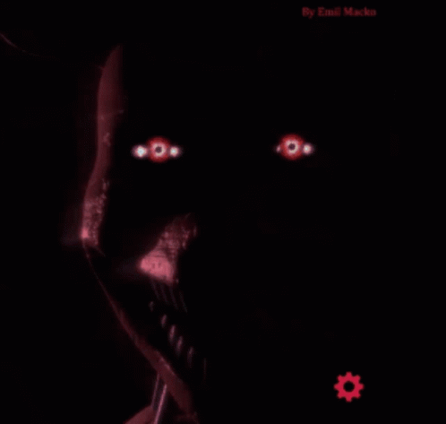
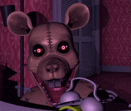

|  | A Fnac (originalmente Fédération nationale d'achats pour cadres, "Federação nacional de compras para gestores") foi fundada originalmente como um clube de associados que podiam comprar determinados produtos com descontos, ano de 1954, pelos empresários franceses André Essel e Max Théret. |  |